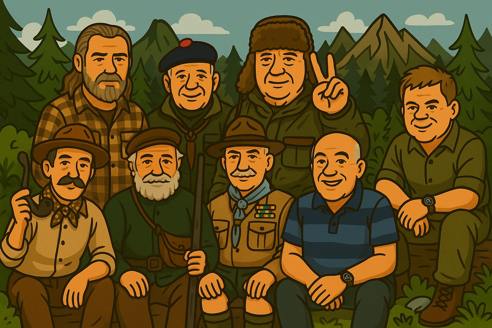
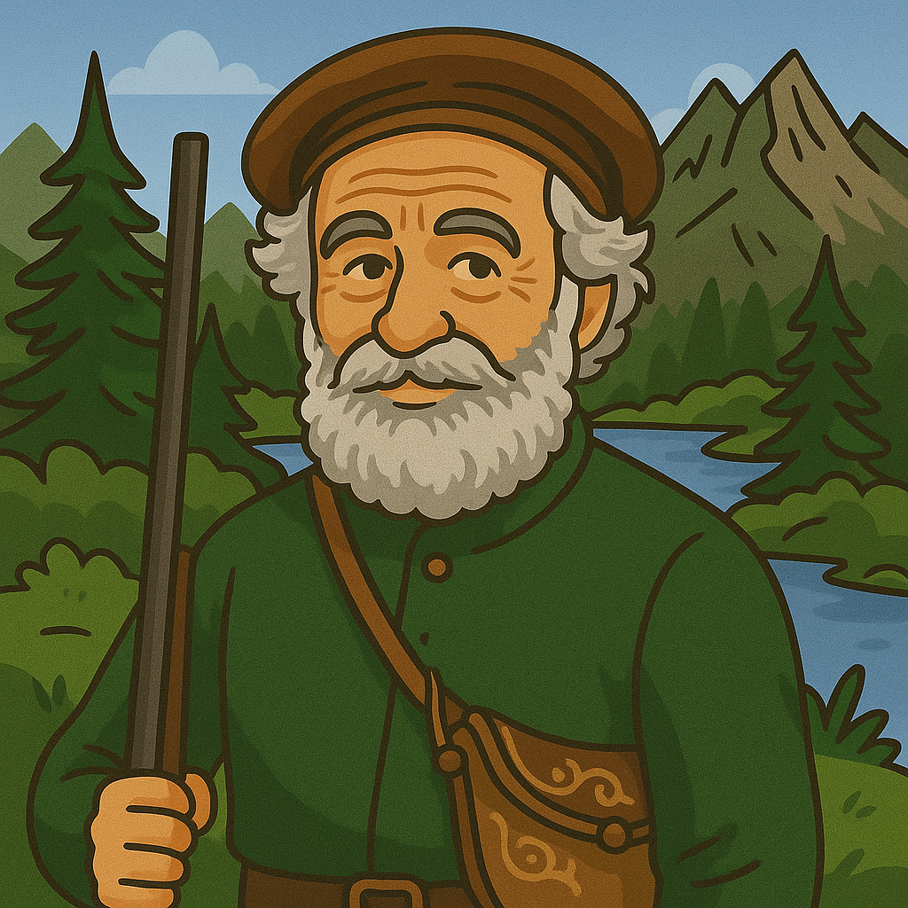

它是你在火堆边学会的事，是你用刀削木时的安静，是你饿了三天后靠自己找到水源和食物的瞬间。
我们向原始民族和祖先学习这些技能。他们没有电，没有网，只有风、火、石头、树。
Bushcraft 帮你走进山林，也教你如何留下。不是逃避，而是面对。面对自然，也面对自己。
这不是流行，也不是游戏。是把现代生活剥开，找到人真正需要的东西：火的温度，水的方向，心的平静。
它讲三件事：丛林技艺、保护自然、自给自足。
孩子们能从中学会勇气，大人们能找回宁静和创造力。
我们正在让这门老技艺重新被看见，这离不开那些走在前面的人——他们把经验变成语言，把火种带给更多人。
分析参考来自 manus 与 GPT-4o，供爱好者回顾。
想了解更多，欢迎访问：bushcraftchina.com

本报告旨在系统性地介绍在Bushcraft、Woodcraft、野外生活、露营、户外运动等领域具有深远影响力的十位代表人物：Nessmuk (George Washington Sears), Adirondack Murray (William Henry Harrison Murray), Thomas Hiram Holding, Baden Powell (Robert Baden-Powell, 1st Baron Baden-Powell), Horace Kephart, John "Lofty" Wiseman, Mors Kochanski, Lars Fält, Dave Canterbury, 和 Ray Mears。报告将按顺序分别阐述每位人物的简历、主要著作、核心贡献与深远影响力，并在最后对这些大师出现的共同特点进行分析。
 ### 简历
乔治·华盛顿·希尔斯（George Washington Sears，1821年12月2日－1890年5月1日），笔名"Nessmuk"，是19世纪80年代美国《森林与溪流》（Forest and Stream）杂志的作家，也是一位早期的自然资源保护主义者。他以笔名"Nessmuk"发表的故事，推广了乘坐开放式轻型单人独木舟在阿迪朗达克湖区进行的自导式独木舟露营旅行，以及如今所谓的超轻量化露营或超轻量化背包旅行。
希尔斯在马萨诸塞州的南奥克斯福德（现为韦伯斯特）长大，是十个孩子中的长子。他的笔名来源于童年时期与他交好的一位美洲原住民。他对家中为数不多的几本关于美洲原住民的书籍非常着迷，这使他对森林生活和冒险产生了持久的兴趣。童年时期在工厂做工的经历让他对查尔斯·狄更斯的作品产生了喜爱。12岁时，他开始在科德角的一个商业捕鱼船队工作，19岁时，他签约参加了一艘前往南太平洋的捕鲸船的三年航行；同年（1841年），赫尔曼·梅尔维尔也从同一港口出发，前往同一片捕鲸场。回来后，他的家人搬到了宾夕法尼亚州的韦尔斯伯勒，他在那里度过了余生。但他继续为了冒险而旅行，足迹遍布中西部北部、安大略省，甚至远至巴西的亚马逊河支流（分别在1867年和1870年）。
希尔斯身高5英尺3英寸（1.60米），体重103磅（47公斤）。他让纽约州坎顿的J. Henry Rushton为他建造了一艘9英尺长（2.7米）、重10.5磅（4.8公斤）的单人独木舟。他将其命名为"Sairy Gamp"（狄更斯小说中的一个角色名），并乘坐它完成了穿越阿迪朗达克中部的266英里（428公里）的旅程。当时他已62岁，身体虚弱（患有肺结核和哮喘）。威廉·亨利·哈里森·默里的《荒野历险记》（Adventures in the Wilderness，1869年出版）曾赞扬阿迪朗达克山脉拥有有益于肺病患者的健康空气，而维普朗克·科尔文关于阿迪朗达克荒野的热情洋溢的文字进一步激发了他的这次旅行。"Sairy Gamp"号独木舟后被史密森学会收藏，现借展于阿迪朗达克博物馆。
（信息来源：维基百科 https://en.wikipedia.org/wiki/George_W._Sears）
威廉·亨利·哈里森·默里（William Henry Harrison Murray，1840年－1904年），通常被称为"阿迪朗达克"默里（Adirondack Murray），是一位美国牧师、作家和演说家。他出生于康涅狄格州吉尔福德的一个普通新英格兰家庭，祖先是当地最早的定居者之一。他的童年充满了学习、农场工作和户外娱乐。他学会了射击、狩猎和捕鱼，同时培养了强烈的阅读习惯和对文学的品味。
默里精力充沛，性格开朗，于1858年秋季进入耶鲁学院。毕业后，他立即与同样热爱户外的伊莎多拉·赫尔（Isadora Hull）结婚。默里立志成为一名牧师，进入康涅狄格州哈特福德附近的公理会东温莎神学院学习神学，并于1864年完成学业。随后，他在康涅狄格州和马萨诸塞州的一系列日益繁荣和有声望的教堂任职，其中最著名的是波士顿的公园街教堂。在这些年里，默里赢得了教会领袖和雄辩、引人入胜的演说家的声誉，但也因享受狩猎和钓鱼等户外娱乐活动而闻名，而公理会通常不鼓励这些活动，认为它们会削弱牧师的热情。
默里于1864年夏天首次在阿迪朗达克山脉露营度假，并在接下来的许多年里每年都回去。他广泛地划独木舟和徒步旅行；他最喜欢的露营地是拉克特湖的鱼鹰岛。默里有时会带朋友一起去，其中可能包括他的妻子和朋友的妻子们。
推广露营文化：默里的《荒野历险记》极大地推动了美国露营文化的发展。他将自然描绘成精神和身体治疗的强大力量，并将露营视为一种开放平等的活动，将一个原本宁静的地区转变为全国性的旅游目的地，并为美国人提供了一种新的、令人安心的休闲方式。
提供实用指南：与之前的阿迪朗达克旅行文学不同，默里的书提供了大量实用建议，例如如何到达阿迪朗达克、如何避免讨厌的昆虫、在哪里购买装备、如何评价向导的素质、当地向导的名字以及可用的住宿等。他告诉初级露营者应该带什么装备，什么可以留在家里。
引发"默里热潮"（Murray's Rush）：该书出版后的几个月内，成千上万的休闲露营者、猎人和垂钓者涌入阿迪朗达克地区，这一现象被称为"默里热潮"。铁路公司甚至开始为前往阿迪朗达克的往返票乘客免费提供一本默里的书，以吸引更多乘客。
（信息来源：史密森尼杂志 https://www.smithsonianmag.com/history/religious-roots-of-americas-love-for-camping-180965280/）
 ###
简历
###
简历
托马斯·海勒姆·霍尔丁（Thomas Hiram Holding，1844年－1930年）是一位英国露营爱好者，被誉为"现代休闲露营之父"。他对露营的热爱源于其童年经历：1853年，年仅9岁的他随家人乘坐篷车穿越美国大草原，行程约1200英里（1900公里）。这段经历深深影响了他，并促使他日后积极推广露营活动。
《露营者手册》（The Camper's Handbook）：霍尔丁于1908年撰写并出版了第一版《露营者手册》。这本书被认为是现代露营的开创性著作之一，为当时的露营爱好者提供了宝贵的指南。 ### 贡献
现代休闲露营的奠基人：霍尔丁被广泛认为是现代休闲露营的创始人。他通过自己的著作和实践，向公众推广了露营作为一种休闲和户外活动方式。
创立露营组织：他是世界上第一个露营俱乐部——自行车露营者协会（Association of Cycle Campers）的创始人，该组织后来发展成为露营和房车俱乐部（The Camping and Caravanning Club）。
设计露营装备：作为一名裁缝，霍尔丁还设计了一些轻便的露营装备，方便人们进行露营活动。
（信息主要来源：大英百科全书 https://www.britannica.com/biography/Thomas-Hiram-Holding 及其他综合网络资源）

### 简历
罗伯特·斯蒂芬森·史密斯·贝登堡，第一代贝登堡男爵（Robert Stephenson Smyth Baden-Powell, 1st Baron Baden-Powell，1857年2月22日－1941年1月8日），通称贝登堡（B-P），是一位英国陆军中将、作家、童军运动的创始人及其第一任总领袖，并与其妹妹艾格尼丝·贝登堡（Agnes Baden-Powell）共同创立了女童军运动。
贝登堡出生于伦敦帕丁顿。他就读于切特豪斯公学，并于1876年至1910年在英国陆军服役，足迹遍布印度和非洲。1899年，在第二次布尔战争期间，贝登堡在南非的梅富根城围城战中成功保卫了该城，成为国家英雄。他为军事侦察和童军训练撰写的书籍，如1884年出版的《侦察与斥候》（Reconnaissance and Scouting）和1899年出版的《给士官和士兵的侦察指南》（Aids to Scouting for N.-C.Os and Men），也被男孩们阅读，并被教师和青年组织使用。
1907年8月，他在白浪岛举办了一个实验性的童军营，以检验他训练男孩进行侦察的想法。1908年，他出版了《童军警探》（Scouting for Boys），这本书以及他之前的军事著作和《童军》杂志，极大地推动了童军运动的迅速发展。1910年，贝登堡从陆军退役，并成立了童军总会。
1909年，在水晶宫举行了一次童军集会，许多穿着童军制服的女孩也参加了。一小群女孩当着媒体的面告诉贝登堡她们是"女童军"。1910年，贝登堡和他的妹妹艾格尼丝创立了女童军总会。1912年，贝登堡与奥莉芙·圣克莱·索姆斯（Olave St Clair Soames）结婚。他一直指导童军总会和女童军总会，直到1937年退休。贝登堡晚年在肯尼亚的涅里度过，并于1941年在那里去世并安葬，其墓地是肯尼亚的国家纪念碑。
《侦察与斥候》（Reconnaissance and Scouting，1884年）
《给士官和士兵的侦察指南》（Aids to Scouting for N.-C.Os and Men，1899年）
《童军警探》（Scouting for Boys，1908年）
以及其他多部关于军事、侦察和童军运动的著作。
（信息来源：维基百科 https://en.wikipedia.org/wiki/Robert_Baden-Powell,_1st_Baron_Baden-Powell）
###
简历
霍勒斯·索尔斯·凯普哈特（Horace Sowers Kephart，1862年9月8日－1931年4月2日）是一位美国旅行作家和图书管理员。他出生于宾夕法尼亚州的东塞勒姆，在爱荷华州长大。他曾于1890年至1903年担任圣路易斯商业图书馆馆长，在此期间也撰写关于露营和狩猎旅行的文章。更早些时候，凯普哈特曾在耶鲁大学担任图书管理员，并作为一位富有的美国图书收藏家的雇员在意大利度过了相当长的时间。
1904年，凯普哈特的家人（妻子劳拉和他们的六个孩子）搬到了纽约州的伊萨卡，但他并未同行（劳拉和霍勒斯从未离婚或合法分居）。霍勒斯·凯普哈特来到了北卡罗来纳州西部，居住在后来成为大烟山国家公园一部分的黑泽尔溪地区。
凯普哈特晚年与摄影师兼朋友乔治·马萨（George Masa）一起为在大烟山建立国家公园而奔走，并有幸亲眼见证公园的建立。他后来被誉为国家公园之父之一。他还帮助规划了阿巴拉契亚小径穿越大烟山的路线。凯普哈特于1931年死于一场车祸，葬于北卡罗来纳州布赖森市附近，这个小镇正是他在《我们的南方高地人》一书中所描绘的地区。在他去世前两个月，凯普哈特山（Mount Kephart）以他的名字命名。
（信息来源：维基百科 https://en.wikipedia.org/wiki/Horace_Kephart）
 ###
简历
###
简历
约翰·"洛夫蒂"·怀斯曼（John "Lofty" Wiseman）是一位英国作家、生存顾问和电视节目主持人。他是英国特种部队——特种空勤团（SAS）的前成员。
1959年，年仅18岁的怀斯曼成为通过SAS选拔的最年轻的人，他此前一年加入了伞兵团。他在SAS服役长达26年，晋升至准尉军衔。怀斯曼还曾担任SAS第22团的作战研究负责人，组建了名为SP小组的反劫持小组，并创立了SAS反恐小组（因参与伊朗大使馆人质事件而闻名）。 在1985年退役前，怀斯曼还参与了选拔课程，帮助决定谁能加入SAS。他退役时，SAS第22团的指挥官称赞道："洛夫蒂是这个团的传奇。"
离开SAS后，他的第一本书是1986年出版的《SAS生存手册》（The SAS Survival Handbook）。此后，怀斯曼成为了一名生存领域的作家和顾问，并出现在电视节目中。他曾为1990年的电影《孟菲斯美女号》（Memphis Belle）的演员提供生存培训，他用寻常材料制作食物的能力启发了演员小亨利·康尼克（Harry Connick Jr.）创作了歌曲《洛夫蒂的蟑螂舒芙蕾》（Lofty's Roach Souffle）。
怀斯曼是Trueways生存学校的教学团队成员，并曾担任电视节目《荒岛余生2000》（Castaway 2000）选拔/培训阶段的教官。
（信息来源：维基百科 https://en.wikipedia.org/wiki/Lofty_Wiseman）
 ###
简历
###
简历
莫尔斯·科肯斯基（Mors Kochanski，1940年10月11日－2019年12月5日）是一位波兰裔加拿大籍的丛林技能（Bushcraft）和野外生存教官、博物学家及作家。他因其在户外教育、生存和荒野生活方面的广泛工作而在北美和欧洲广为人知。他对北方森林的热情以及学习一切相关知识的渴望，使他成为世界上北方荒野技能和生存领域的顶尖权威之一。
科肯斯基出生于加拿大一个波兰移民家庭，居住在阿尔伯塔省的皮尔斯。在过去的45年里，他主要在阿尔伯塔省北部和中部生活和工作，并为当地的户外爱好者所熟知。他在阿尔伯塔大学担任了25年的户外教育教官。他还作为Karamat Wilderness Ways的大师级教官参与了为期一周的强化野外生存课程。
科肯斯基在过去的30年里一直参与青少年森林守护者计划（Junior Forest Warden Program），激励着守护者和领导者们。他于2008年获得了青少年森林守护者终身成就奖。他于2019年12月5日因腹膜间皮瘤在家中去世。
（信息来源：Karamat Wilderness Ways https://karamat.com/about-us/about-mors-kochanski/ 及其他综合网络资源）
 ###
简历
###
简历
拉斯·费尔特（Lars Fält）是瑞典著名的军事教官、生存专家和作家。他是瑞典陆军生存学校的创始人，并在世界范围内就生存技能发表演讲。他被认为是瑞典丛林技能、户外和生存训练领域的元老级人物。他于1980年建立了瑞典生存学校，并长期担任教官，也曾为英国特种空勤团（SAS）等国际特种部队提供培训。 ### 著作
拉斯·费尔特撰写了多部关于野外生存技能的著作，据布鲁姆斯伯里出版社（Bloomsbury Publishing）介绍，他著有10本书。其中一些知名的作品包括：
他还设计了著名的卡斯特罗姆·拉斯·费尔特刀（Casstrom Lars Falt Knife）。
（信息来源：Bloomsbury Publishing https://www.bloomsbury.com/us/author/lars-f%C3%A4lt/, Natural Man https://naturalman.uk.com/blogs/quality-gear-for-life/lars-falt-renowned-swedish-survival-expert, Canadian Outdoor Equipment Co. https://www.canadianoutdoorequipment.com/lars-falt-books.html 等综合网络资源）

戴夫·坎特伯雷（David Michael Canterbury，生于1963年9月19日）是一位美国生存专家。他曾在美国探索频道（Discovery Channel）播出的真人秀节目《原始生活二人组》（Dual Survival）中共同主持了两季（2010-2011年）。他也是一位作家，于2014年出版了《丛林技能101》（Bushcraft 101）（该书曾登上《纽约时报》畅销书排行榜），以及《普通人的生存能力》（Survivability for the Common Man，2011年）和《高级丛林技能》（Advanced Bushcraft，2015年）。2015年，坎特伯雷在美国国家地理频道播出的生存系列节目《腐烂求生》（Dirty Rotten Survival）中共同主持。
他的早期职业生涯包括在爬行动物农场工作，之后在佛罗里达州担任商业渔民和潜水员。据维基百科记录，他曾在美国陆军服役，军衔为中士，隶属于第984宪兵连和第260宪兵连，服役时间为1981年至1987年。
坎特伯雷目前是位于俄亥俄州东南部的探路者学校（The Pathfinder School）的所有者和教官之一。他教授生存技巧，推广他所谓的"生存5C原则"：切割工具（cutting tool）、点火装置（combustion device）、遮蔽物（cover）、容器（container）和绳索（cordage）。他在YouTube上拥有一个电视频道，发布与生存主题相关的教学视频。
（信息来源：维基百科 https://en.wikipedia.org/wiki/Dave_Canterbury, Self Reliance Outfitters https://www.selfrelianceoutfitters.com/blogs/survival-blog/dave-canterbury 等综合网络资源）
 ###
简历
###
简历
雷蒙德·保罗·米尔斯（Raymond Paul Mears，生于1964年2月7日）是一位英国林地生活专家、教官、商人、作家和电视节目主持人。他的电视节目主要涵盖丛林技能和生存技巧。
米尔斯在英格兰南部的北唐斯丘陵长大。他就读于珀利的唐赛德预备学校，然后是赖盖特文法学校，在那里他是混合学员部队皇家海军分队的一员。他最初的志向是加入皇家海军陆战队，但未能达到视力要求。完成A-levels学业后，米尔斯曾在伦敦金融城的一家办公室短暂工作。
1983年，米尔斯创立了Woodlore公司，提供丛林技能相关的课程和用具。该公司非常成功，并注册了"Ray Mears"商标。米尔斯于1994年首次出现在电视上，主持BBC系列节目《Tracks》，随后在1997年主持了《雷·米尔斯的生存世界》（Ray Mears' World of Survival）。2003年，他主持了BBC纪录片《雷·米尔斯：泰勒马克的真正英雄》（Ray Mears' Real Heroes of Telemark），讲述了二战期间挪威重水突击队的任务。
他因主持《雷·米尔斯的丛林技能》（Ray Mears' Bushcraft）、《雷·米尔斯的生存世界》（Ray Mears' World of Survival）、《极限生存》（Extreme Survival）、《与雷·米尔斯一起生存》（Survival with Ray Mears）、《与雷·米尔斯探索英国》（Wild Britain with Ray Mears）和《雷·米尔斯漫游澳洲》（Ray Mears Goes Walkabout）等电视系列节目而闻名。
2009年，他获得了著名的蒙戈·帕克奖章（Mungo Park Medal）。2010年7月，诺森布里亚警方曾请求米尔斯协助追踪逃犯劳尔·莫特（Raoul Moat）。2019年，他因其"对工艺、荒野和公众推广的出色表现"而被约克大学考古学系授予荣誉学位。
雷·米尔斯撰写了多部关于生存和丛林技能的书籍，包括：
（信息来源：维基百科 https://en.wikipedia.org/wiki/Ray_Mears, RayMears.com https://www.raymears.com/Ray_Mears/About_Ray_Mears.cfm 等综合网络资源）
经过对这十位大师生平事迹、主要贡献和深远影响的梳理，可以总结出以下几个显著的共性特征：
这些大师无一不是通过长时间的、深入的野外实践来积累知识和磨练技能。无论是Nessmuk的轻舟探险，Baden Powell的军事侦察，还是John Wiseman在SAS的长期服役，Mors Kochanski对北方森林的数十年研究，Lars Fält在瑞典军队的生存教学，亦或是Ray Mears对全球原住民生存智慧的探寻，他们都将大量时间投入到真实环境的体验与挑战中，从而达到了对相关技能的精通。
他们中的许多人不仅仅是技能的实践者，更是理念的创新者和方法论的构建者。例如，Nessmuk推广了超轻量化概念；Adirondack Murray普及了休闲露营；Thomas Hiram Holding奠定了现代休闲露营的基础；Baden Powell创立了童军运动这一完整的青少年户外教育体系；Mors Kochanski提出了"你知道得越多，你需要携带的就越少"的著名理念；Dave Canterbury总结了"生存核心要素"。这些理念和方法论对后世产生了深远影响。
几乎所有大师都通过著书立说、开办学校或课程、参与媒体节目等多种方式，不遗余力地向公众传播他们的知识和技能。他们的著作（如Nessmuk的《森林工艺》、Kephart的《露营与野外生存技能》、Wiseman的《SAS生存手册》、Kochanski的《丛林技能》、Mears的众多畅销书）往往成为各自领域的经典教材。Baden Powell的《童军警探》更是催生了全球性的运动。Lars Fält、Dave Canterbury、Ray Mears等也通过创立专门的生存学校（瑞典陆军生存学校、探路者学校、Woodlore）来系统培养人才。
许多大师在其工作和教导中都贯穿着对自然的深刻理解和发自内心的尊重。他们强调与自然的和谐共处，学习自然的规律，并从中获取生存的智慧。例如Ray Mears对原住民传统生态知识的推崇，Horace Kephart对阿巴拉契亚山区自然与文化的保护，Nessmuk作为早期环保主义者的呼吁等。
这些大师的工作超越了个人成就，对社会文化、特定领域的发展乃至全球范围都产生了广泛而持久的影响。Baden Powell的童军运动影响了数以亿计的青少年；Nessmuk和Kephart的作品持续影响着户外爱好者和作家；Wiseman、Kochanski、Fält、Canterbury和Mears的教学和著作塑造了现代生存技能和丛林技能的面貌。
支撑他们取得卓越成就的，是对户外生活、特定技能或教育事业的强烈个人热情和近乎一生的奉献。他们往往将个人的爱好发展成为毕生的追求，并以极大的毅力和专注度投入其中。
Baden Powell、John Wiseman、Lars Fält 等人拥有深厚的军事背景，他们的许多生存技能和教学方法源于或受到了军事训练和实战经验的启发。这使得他们的技能体系通常具有高度的实用性和系统性。
随着时代发展，后期的几位大师如Dave Canterbury和Ray Mears，更善于利用电视、互联网（如YouTube）等新兴媒体平台来推广他们的理念和技能，从而获得了更广泛的受众和影响力。
这些共性特征共同塑造了这些户外领域大师的形象，使他们不仅成为特定技能的传承者和创新者，更成为文化的传播者和影响深远的教育家。